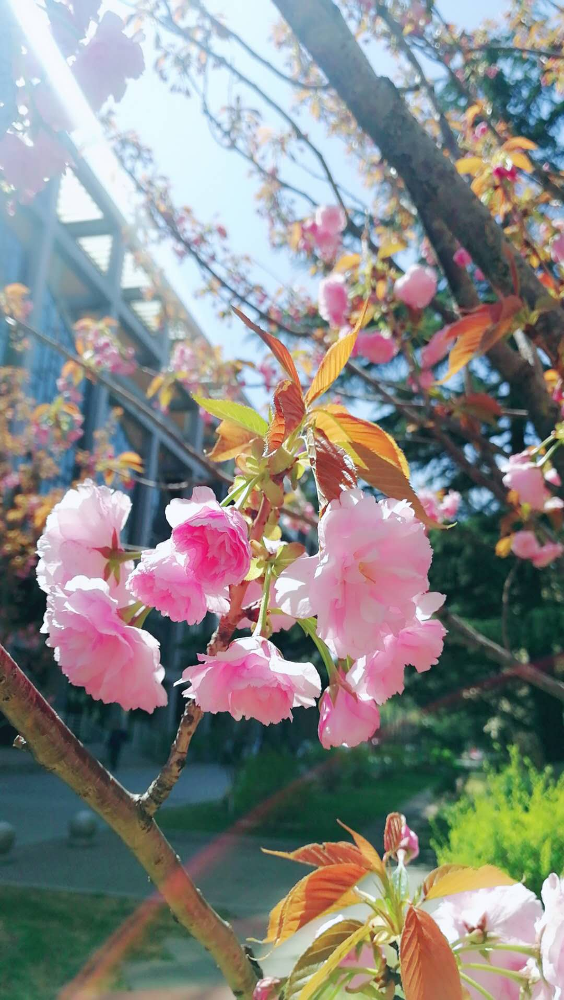
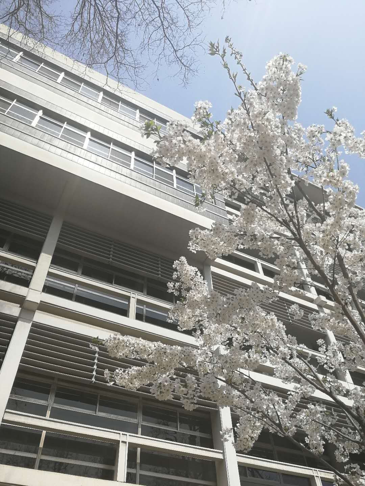

<h1><center>樱花</center></h1>
<p><center>

    </center></p>
    <p><center>

    </center></p>
<p><center>
樱花，别名山樱花，蔷薇科樱桃属樱桃亚属的一种植物。樱花花色幽香，常用于园林观赏。樱花被作为春天的象征，并且深受人欢迎。</center></p>
   <center><p>一周前北外日研楼后的白色樱花开了一片，现在虽然已经落了，但高翻院前的粉色樱花刚刚开放，喜欢樱花的朋友不要错过！
    </center></p>
     <body bgcolor="#FFE4E1">